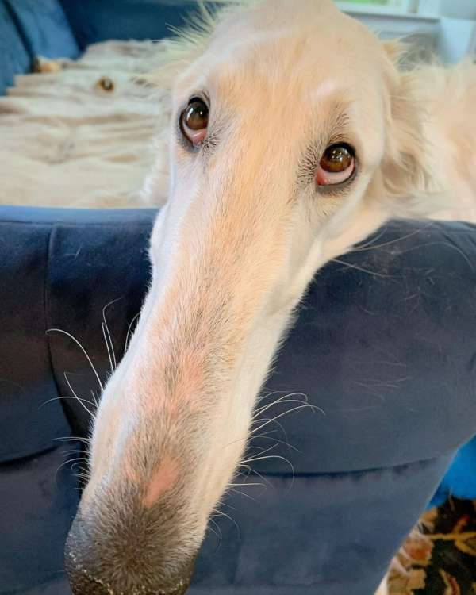

Profile

山梨県出身。2002/11/05 生まれ。INFJ。
趣味: 編み物、映画、読書
好きなもの: 動物、ピンク色、海
苦手なもの: 数学、運動、にんじん
智慧が隆々と湧き上がるように、好奇心旺盛にいろんなことを学び、成し遂げてほしい。
私の名前にはそのような願いが込められています。
さて、私はそのような人になれているでしょうか。
好きな映画
- Thelma & Louis
- るろうに剣心シリーズ
- ロンドンゾンビ紀行
シスターフッドを描いた感動的な物語から、ド派手なアクションシーンが魅力の映画、ゾンビパンデミック作品など幅広いジャンルの映画が好きです。
夏になると野外で映画を見られるイベントが各地で開催されるのでたくさん参加したいです。
好きな鶏肉料理
- チキン南蛮
- 焼き鳥
- タッカンマリ
鶏肉は煮ても、焼いても、揚げても、おいしいですよね。基本的にお肉は何でも好きですが特に鶏料理が好きです。
将来は最強のチキン南蛮職人になりたいです。
好きな犬
- 秋田犬
- 長すぎるボルゾイ
- ゴールデンレトリバー

デカい犬が好きです。いつか常識では考えられないほどデカい犬を飼いたいです。
夕方に街を散歩するといろいろな種類の犬が無料でいっぱい見られてたのしいですよ。
取得した資格
- 普通自動車第一種運転免許
- TOPIK6級
- TOEIC640点
運転免許取得が一番難しかったです。世界平和と安全のために金輪際運転はしないと決めています。
ガソリン代をお支払いしますので運転はよろしくお願いいたします。